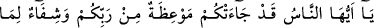
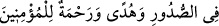
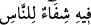
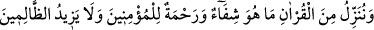
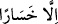
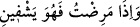
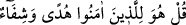

1- “Mümin olan kavmin kalplerine şifâ versin.” (et-Tevbe, 9/14)
2- “Ey insanlar! Size rabbinizden bir öğüt, gönüllerdekine bir şifâ, müminler için
bir hidâyet ve rahmet gelmiştir.” (Yunus, 10/57)
3- “Onda insanlar için bir şifâ vardır.” (en-Nahl, 16/69)
4- “Biz Kur’an’dan öyle bir şey indiriyoruz ki o, müminler için şifâ ve rahmettir.
Zâlimlerin ise yalnızca ziyanını arttırır.” (el-İsra, 17/82)
5- “Hastalandığım zaman bana şifâ veren O’dur.” (eş-Şuara, 26/80)
6- “O inananlar için doğru yolu gösteren bir kılavuzdur ve şifâdır.” (Fussilet,
41/44)
Göz değmesi için tedâvi yöntemlerinden birisi de, gözü değen kişiden boy abdesti ya
da namaz abdesti almasını istemek ve ondan dökülen bu su ile göz değmesine uğrayan
kimsenin boy abdesti almasını sağlamaktır.
Denildiğine göre göz değmesi şu şekilde gerçekleşir: Herhangi bir şeye bakan,
baktığını güzel bulur da Allah’a dönmez ve Allah’ın yarattığı o şeydeki ilâhî sanatı
görmezse, Cenab-ı Hak gaflet içinde bakanın işlemiş olduğu bu yanlışlık sebebiyle o
eşya üzerinde bir hastalık meydana getirir. Allah Teâlâ’nın yapmış olduğu bu imtihânın
gâyesi, hak yolda yürüyenin “bu Allah’tandır” demesini, hak yolu tutmayan kişilerin de
başka şeyler söylemesini sağlamaktır. Böylece bahsedilen o hastalığa, o nesneye bakan
kişi sebep olduğu için, o şahıs bundan sorumlu tutulur.
Bâzıları göz değmesini şöyle açıklarlar: Nazarı değen kişinin gözünden zehirli bir güç
çıkarak göz değen kişiye ulaşır. Bu sebeple o kişi helâk olur ya da hastalanır. Nitekim
bâzı yılanların gözlerinde de böyle bir güç olduğundan söz edilmiştir.
el-Esraru’l-muhammediyye’de denir ki: Zehirli yaratıklar, içlerinde taşıdıkları kötü
enerjik yapıları ile başkalarına etki ederler. Bunlar düşmanlarıyla karşı karşıya